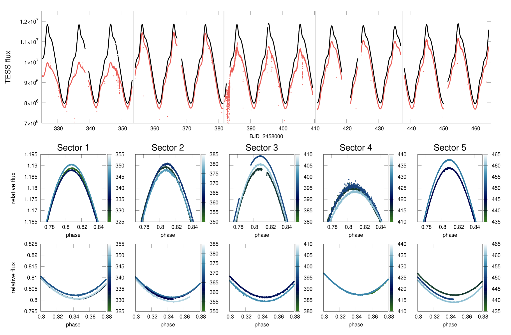
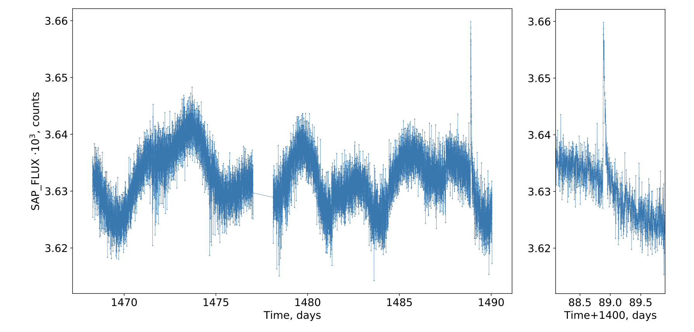
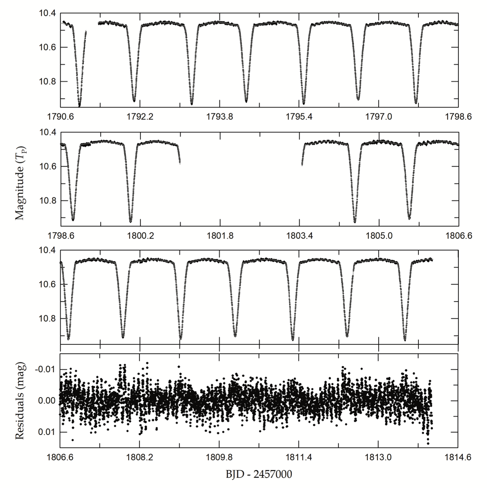

STATUS UPDATE: Cycle 4 sectors are now included in the Web TESS Viewing Tool (WTV).
Welcome followers to our holiday edition of the TESS weekly news bulletin. This week we have three papers from the archive. Enjoy!
TESS observations of Cepheid stars: first light results (Plachy et. al., 2020):
The paper aims to understand the limitations of TESS concerning the various subtypes of Cepheids. The authors present the first analysis of Cepheid stars observed by TESS in sectors 1-5.
Overall 25 pulsators were detected: 10 fundamental mode, 3 overtone, 2 double-mode classical Cepheids, 3 Type II, and 7 anomalous Cepheids. Targets were selected from fields with different stellar densities, from the Galactic field and the Magellanic Cloud.
Of the 25 objects, three have 2 minute cadenced light curves, the rest were prepared from full frame images using the authors custom FITSH pipeline. From these light curves the authors detect many low amplitude features such as weak modulation, period jitter, and timing variations due to light-time effect. Signs of non-radial modes were also detected, in addition to the first discovery of such a mode in an anomalous Cepheid, the overtone star XZ Cet. The authors confirmed this object with ground-based multicolor photometric measurements.
Minimizing the saturation effects in the bright fundamental-mode classical Cepheid β Dor, the authors revealed strong evidence of cycle-to-cycle variations in the star.
Flare stars in nearby Galactic open clusters based on TESS data (Maryeva et. al., 2020):
This paper examines flare stars using TESS data. The paper analyzes 957 high cadence light curves of 136 open clusters, finding 56 flare stars. Of the flare stars found, 8 were hot B-A objects.
Of all flares detected 63% were detected in a sample of cool stars with Teff < 5000 K, 29% in stars of spectral type G, 23% in K-type stars, and 34% of all flares were detected in M-type stars.
Using the FLATW'RM (FLAre deTection With Ransac Method) flare finding algorithm, the authors estimated the parameters of the flares and the rotation periods of the stars. Statistical analysis did not reveal any direct correlation between ages, rotation periods and flaring activity.
Tidally Excited Modes and δ Scuti Pulsations in the Eclipsing Triple Star IM Persei (Lee et. al., 2020):
TESS data was used to investigate the triple star system - IM Per. This is a system whose eclipsing pair masses and radii are known to within 1 %. The TESS light curve was found to exhibit partial eclipses and multiple oscillations with milli-mag-level amplitudes, these oscillations affect eclipse timing measurements. Using TESS data and binary modeling, the authors indicate that the eclipsing components of the triple system are twin dwarfs with parameters of M2 / M1 = 0.995, R2 / R1 = 0.901, and Δ (Teff,1 - Teff,2) = 12 K in an eccentric (e = 0.049), detached configuration. The third light of l3 = 0.054 comes mostly from a G-type tertiary companion.
In the paper the authors predict a parallax of 1.52 mas, which concurs with the Gaia measurement. For additional information about the pulsation periods and multi-frequency analysis, check out the paper online!

Fig 1. Taken from Plachy et. al., (2020). Two min cadence TESS photometry of β Dor from the SPOC pixel mask (red) and the authors custom pixel mask (black). Lower panels show the differences in the maxima and minima of the custom light curves when folded with the pulsation period, for each sector. Colors indicate the progress of time (BJD−2458000) in days.

Fig 2. Taken from Maryeva et. al., (2020). Light curve of HD 36030 (B9V) with a clearly detected flare.

Fig 3. Taken from Lee et. al., (2020). The top to third panels show the time-series data of IM Per with the fitted model. The black circles are individual measures observed during the TESS Sector 18, and the gray solid lines represent the synthetic curves obtained from the binary star modeling. The bottom panel displays a blow-up of the corresponding residuals on the same time baseline as the third panel.